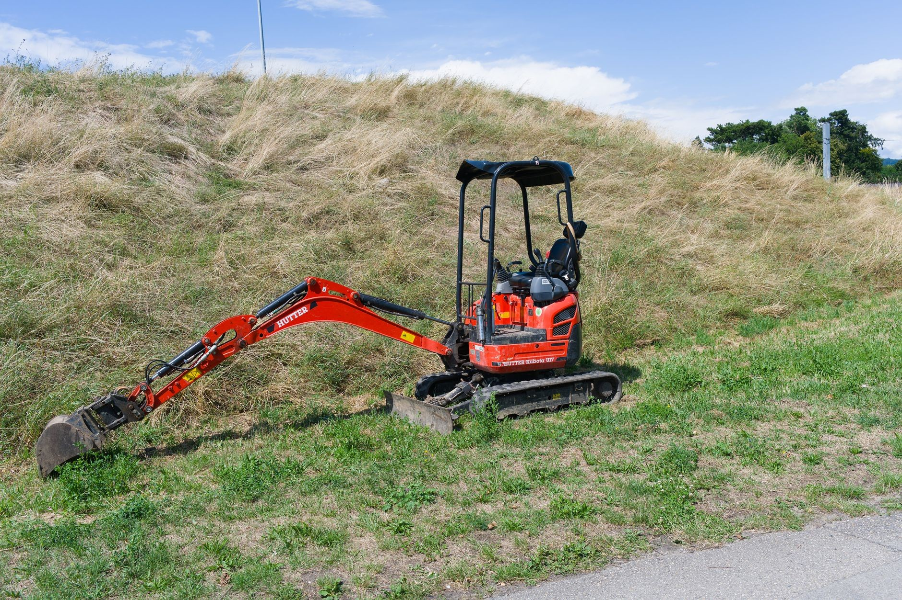
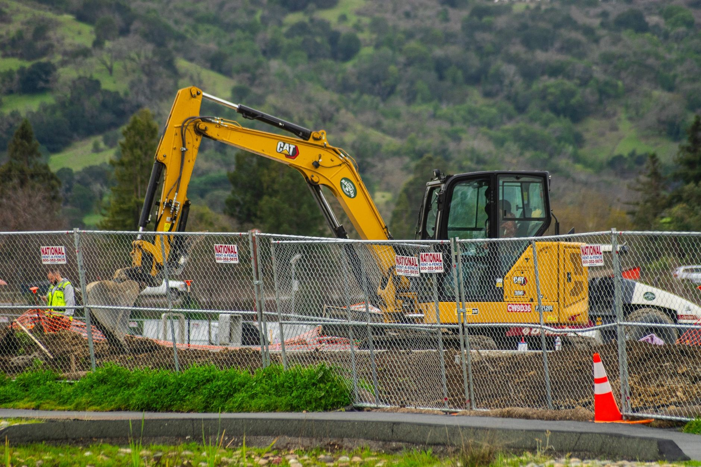
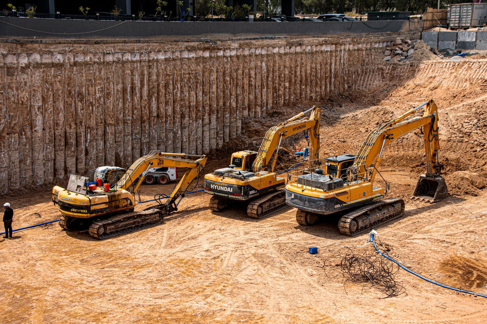

Prace ziemne minikoparką
Wykopy i niwelacja terenu. Minikoparka tam, gdzie duża nie wjedzie.
Kopiemy pod fundamenty, przyłącza i drenaże, robimy wykopy pod szamba i równamy działki.
Zadzwoń teraz +48 582 509 650- Minikoparka
- Wykopy i przyłącza
- Niwelacja terenu


Jak pracujemy
Wiesz, na czym stoisz - na każdym etapie
Od pierwszego telefonu do odbioru roboty - krok po kroku.
- 01
Telefon
Mówisz, co trzeba zrobić i gdzie: wykop, przyłącze, szambo, niwelacja.
- 02
Rada i wycena
Pytamy o dojazd i grunt, doradzamy rozwiązanie, podajemy cenę i dzień wjazdu.
- 03
Praca minikoparką
Kopiemy, zasypujemy i równamy, pilnując podjazdu i trawnika.
- 04
Teren gotowy
Zostawiamy posesję gotową dla kolejnej ekipy albo pod ogród.
Realizacje
Prace ziemne
Rodzaje prac, które wykonujemy: wykopy, przyłącza, niwelacja i porządkowanie terenu.




Co robimy
Prace ziemne minikoparką
Roboty, które wykonuję regularnie - rozpisane razem z cenami.
- Wykopy pod fundamentyWybieramy grunt pod ławy i płytę na głębokość z projektu. Ziemię składamy na działce we wskazanym miejscu.Wycena →
- Przyłącza wody, kanalizacji i prąduWąskie wykopy od budynku do granicy działki. Po ułożeniu rur zasypujemy i równamy teren.Wycena →
- Drenaż i odkopanie fundamentówOdkopujemy ściany pod izolację albo drenaż, a po robocie zasypujemy wykop.Wycena →
- Szamba i zbiornikiWykop pod szambo, przydomową oczyszczalnię albo zbiornik na deszczówkę, z zasypaniem wokół.Wycena →
- Niwelacja i korytowanieRównamy działkę pod trawnik, korytujemy pod podjazd i kostkę, rozplantowujemy ziemię.Wycena →
- Prace w ogrodzieWykopy pod ogrodzenie, nasadzenia, oczko wodne i nawadnianie, bez rozjeżdżania całego trawnika.Wycena →
Współpraca
Masz wykop albo działkę do wyrównania?
Jeden telefon i przyjedziemy zobaczyć zakres. Wycena nic nie kosztuje.